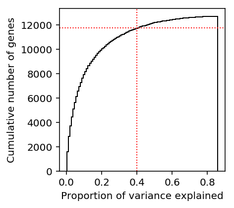
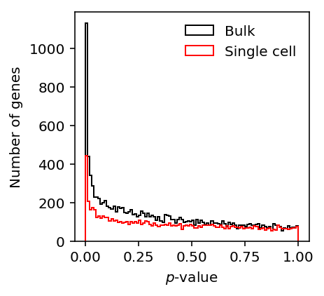

Power to detect QTLs in single cell data
Introduction
We previously found that our study lost power to detect eQTLs, and was underpowered to directly detect dispersion-QTLs.
Here, we estimate power to detect eQTLs and dispersion-QTLs as a function of:
- number of cells per individual
- number of molecules per cell
- number of individuals
Differential dispersion
Perform a nested model comparison for each gene \(k\), comparing the model:
\[ r_{ijk} \sim ZINB(\pi_{ik}, \mu_{ik}, \phi_{ik}) \]
against the model:
\[ r_{ijk} \sim ZINB(\pi_{ik}, \mu_{ik}, \phi_{i}) \]
def lrt(umi, onehot, design, size_factor): _, _, _, llik0 = fit( umi=umi.values.T.astype(np.float32), onehot=onehot.astype(np.float32), design=design.astype(np.float32), size_factor=size_factor.astype(np.float32), fit_null=True, return_llik=True, learning_rate=5e-2, max_epochs=4000) _, _, _, llik1 = fit( umi=umi.values.T.astype(np.float32), onehot=onehot.astype(np.float32), design=design.astype(np.float32), size_factor=size_factor.astype(np.float32), return_llik=True, learning_rate=5e-2, max_epochs=4000) T = 2 * (llik1 - llik0) return T, st.chi2(1).logsf(T)
Null calibration via parametric bootstrap
Sample null data from the model, using empirical estimates of the parameters in the observed data.
<<zinb-imports>> <<tf-imports>> <<tf-zinb-impl>> <<lrt-impl>> <<sim-impl>> log_mu = pd.read_table('/project2/mstephens/aksarkar/projects/singlecell-qtl/data/density-estimation/design1/zi2-log-mu.txt.gz', index_col=0, sep=' ') log_phi = pd.read_table('/project2/mstephens/aksarkar/projects/singlecell-qtl/data/density-estimation/design1/zi2-log-phi.txt.gz', index_col=0, sep=' ') logodds = pd.read_table('/project2/mstephens/aksarkar/projects/singlecell-qtl/data/density-estimation/design1/zi2-log-mu.txt.gz', index_col=0, sep=' ') params = pd.DataFrame({'log_mu': log_mu['NA18507'], 'log_phi': log_phi['NA18507'], 'logodds': logodds['NA18507']}, index=log_mu.index) params = params[params['log_mu'] > -10] n = 100 umi = pd.DataFrame([simulate(2 * n, size=1e5, log_mu=log_mu, log_phi=log_phi, logodds=logodds)[0][:,0] for _, (log_mu, log_phi, logodds) in params.iterrows() if log_mu > -10], index=params.index) onehot = np.zeros((2 * n, 2)) onehot[:n,0] = 1 onehot[n:,1] = 1 design = np.zeros((2 * n, 1)) size_factor = 1e5 * np.ones((2 * n, 1)) T, P = lrt(umi, onehot, design, size_factor) pd.DataFrame({'chi2': T, 'logp': P}, index=umi.index).to_csv('null-calibration-p.txt.gz', sep='\t', compression='gzip')
sbatch --partition=gpu --gres=gpu:1 --mem=16G --job-name=tf-lrt-null --output=tf-lrt-null-parametric.out #!/bin/bash source activate scqtl python /project2/mstephens/aksarkar/projects/singlecell-qtl/code/tf-lrt-null-parametric.py
Submitted batch job 46322399
Read the results.
null_lrt = pd.read_table('/scratch/midway2/aksarkar/singlecell/power/null-calibration-p.txt.gz') N = null_lrt.shape[0]
Report how many genes were simulated.
N
1832
Estimate bootstrap CIs for the quantiles.
B = np.sort(st.chi2(1).rvs((N, 100)), axis=0) ci = np.percentile(B, [2.5, 97.5], axis=1)
Plot the QQ-plot.
plt.clf() plt.gcf().set_size_inches(4, 4) grid = st.chi2(1).ppf(np.linspace(0, 1 - 1 / N, N)) plt.scatter(grid, null_lrt['chi2'].sort_values(), c='k', s=2) plt.fill_between(grid, ci[0], ci[1], color='k', alpha=0.1) lim = [0, 1.01 * grid.max()] plt.plot(lim, lim, c='r', lw=1) plt.xlim(lim) plt.xlabel('Expected $\chi^2$ statistic') _ = plt.ylabel('Observed $\chi^2$ statistic')

Power
Sample from the assumed model.
<<zinb-imports>> <<tf-imports>> <<tf-zinb-impl>> <<lrt-impl>> <<sim-impl>> log_mu = pd.read_table('/project2/mstephens/aksarkar/projects/singlecell-qtl/data/density-estimation/design1/zi2-log-mu.txt.gz', index_col=0, sep=' ') log_phi = pd.read_table('/project2/mstephens/aksarkar/projects/singlecell-qtl/data/density-estimation/design1/zi2-log-phi.txt.gz', index_col=0, sep=' ') logodds = pd.read_table('/project2/mstephens/aksarkar/projects/singlecell-qtl/data/density-estimation/design1/zi2-log-mu.txt.gz', index_col=0, sep=' ') params = pd.DataFrame({'log_mu': log_mu['NA18507'], 'log_phi': log_phi['NA18507'], 'logodds': logodds['NA18507']}, index=log_mu.index) params = params[params['log_mu'] > -10].sample(n=50) sample_sizes = np.geomspace(1e2, 1e5, 5).astype(int) log_fold_changes = np.log(np.geomspace(1.1, 2, 5)) depths = np.geomspace(1e4, 1e6, 5) result = [] for num_mols in depths: for log_fc in log_fold_changes: for num_samples in sample_sizes: umi = [] for _, (log_mu, log_phi, logodds) in params.iterrows(): umi.append(np.hstack([ simulate(num_samples, size=num_mols, log_mu=log_mu, log_phi=log_phi, logodds=logodds)[0][:,0], simulate(num_samples, size=num_mols, log_mu=log_mu, log_phi=log_phi + log_fc, logodds=logodds)[0][:,0] ])) umi = pd.DataFrame(umi, index=params.index) onehot = np.zeros((umi.shape[1], 2)) onehot[:num_samples,0] = 1 onehot[num_samples:,1] = 1 design = np.zeros((umi.shape[1], 1)) size_factor = num_mols * np.ones((umi.shape[1], 1)) T, P = lrt(umi, onehot, design, size_factor) result.append(pd.DataFrame({ 'num_mols': num_mols, 'num_samples': num_samples, 'log_fold_change': log_fc, 'chi2': T, 'logp': P})) pd.concat(result).to_csv('lrt-power.txt.gz', sep='\t', compression='gzip')
sbatch --partition=gpu --gres=gpu:1 --mem=16G --job-name=tf-lrt-power --output=tf-lrt-power.out #!/bin/bash source activate scqtl python /project2/mstephens/aksarkar/projects/singlecell-qtl/code/tf-lrt-power.py
Submitted batch job 46367157
sacct -j 46367157 -o Elapsed
Elapsed ---------- 06:59:58 06:59:58 06:59:58
Move the results to permanent storage.
rsync -FFau /scratch/midway2/aksarkar/singlecell/power /project2/mstephens/aksarkar/projects/singlecell-qtl/data/power/
Read the results.
lrt_results = (pd.read_table('/project2/mstephens/aksarkar/projects/singlecell-qtl/data/power/lrt-power.txt.gz', index_col=0) .reindex()) features = ['num_mols', 'num_samples', 'log_fold_change'] lrt_power = (lrt_results .groupby(features) .apply(lambda x: (np.exp(x['logp']) < 0.05).sum() / x.shape[0]) .to_frame() .reset_index())
Plot the results.
plt.clf() plt.gcf().set_size_inches(4, 4) num_mols = 1e5 grid = np.log(np.linspace(1.1, 2, 100)) groups = sorted(set(lrt_power['num_samples'])) for i, n in enumerate(groups): color = colorcet.cm['inferno']((i + 1 / (2 * len(groups))) / len(groups)) subset = lrt_power[np.logical_and(lrt_power['num_mols'] == num_mols, lrt_power['num_samples'] == n)] plt.plot(np.exp(subset['log_fold_change']), subset[0], lw=1, marker='.', ms=8, c=color, label='$10^{{{:.1f}}}$'.format(np.log(n) / np.log(10))) plt.legend(title='# samples', frameon=False, loc='center left', bbox_to_anchor=(1, .5)) plt.xlabel('Fold change in dispersion') plt.ylabel('Power at level 0.05')
Text(0,0.5,'Power at level 0.05')

plt.clf() plt.gcf().set_size_inches(4, 4) num_samples = 100 groups = sorted(set(lrt_power['num_mols'])) for i, n in enumerate(groups): color = colorcet.cm['inferno']((i + 1 / (2 * len(groups))) / len(groups)) subset = lrt_power[np.logical_and(lrt_power['num_mols'] == n, lrt_power['num_samples'] == num_samples)] plt.plot(np.exp(subset['log_fold_change']), subset[0], lw=1, marker='.', ms=8, c=color, label='$10^{{{:.1f}}}$'.format(np.log(n) / np.log(10))) plt.legend(title='# molecules', frameon=False, loc='center left', bbox_to_anchor=(1, .5)) plt.xlabel('Fold change in dispersion') plt.ylabel('Power at level 0.05')
Text(0,0.5,'Power at level 0.05')

QTL discovery
We assume the phenotype is generated from \(m\) causal effects (out of \(p\) variants) following a linear model:
\[ \theta_i = \sum_j X_{ij} \beta_j + \epsilon_i \]
\[ \mathbb{E}[x_i] = 0, \mathbb{V}[x_i] = 1 \]
\[ \beta_j \sim N(0, 1) \text{ if \(j\) causal}\]
\[ \epsilon_i \sim N(0, \mathbb{V[X \beta]} (1 / h^2 - 1)) \]
def read_dosage(row, dose_file, window=100000): x = np.array([record[9:] for record in dose_file.query(row['chr'], row['start'] - window, row['start'] + window)]).astype(np.float).T x -= x.mean(axis=0) x /= x.std(axis=0) return x def generate_pheno(x, pve, m=None): n, p = x.shape if m is None: theta = np.random.normal(size=p) else: theta = np.zeros(p) # Assume x standardized theta[np.random.choice(p, m, replace=False)] = np.random.normal(size=m) y = x.dot(theta) y += np.random.normal(scale=np.sqrt(y.var() * (1 / pve - 1)), size=n) y -= y.mean() y /= y.std() return y.reshape(-1, 1) _sf = st.chi2(1).sf def nominal_test(x, y): n = y.shape[0] # Assume x standardized, so diag(X' X) = n I beta = x.T.dot(y) / n df = n - 1 rss = ((y ** 2).sum() - beta ** 2 * n) sigma2 = rss / df return _sf(beta ** 2 / sigma2) def beta_llik(theta, x): return -st.beta.logpdf(x, *theta).mean() def permutation_test(x, y, num_trials=100): pval = nominal_test(x, y).min() null_pheno = y.copy() null_pvals = [] for _ in range(num_trials): np.random.shuffle(null_pheno) null_pvals.append(nominal_test(x, null_pheno).min()) null_pvals = np.array(null_pvals) theta = np.ones(2) opt = so.minimize(beta_llik, x0=theta, args=(null_pvals,)) if opt.success: theta = opt.x else: # Method of moments theta = np.array([1, (1 / null_pvals.mean() - 1)]) theta *= np.square(null_pvals.mean()) * ((1 - null_pvals.mean()) / null_pvals.var() - 1) return st.beta.cdf(pval, *theta) # Important: tabix read doesn't appear to be thread-safe read_lock = mp.Lock() def evaluate(num_individuals, num_causal, pve, num_genes=100): query = eqtls.sample(n=num_genes) result = [] for _, record in query.iterrows(): read_lock.acquire() try: x = read_dosage(record, yri) finally: read_lock.release() keep = np.random.choice(x.shape[0], num_individuals, replace=False) x = x[keep] y = generate_pheno(x, pve=pve, m=num_causal) pval = permutation_test(x, y) result.append({ 'gene': record.name, 'num_individuals': x.shape[0], 'num_snps': x.shape[1], 'num_causal': num_causal, 'pve': pve, 'pval': pval}) return pd.DataFrame.from_dict(result)
Re-QC dosages for 120 YRI individuals.
sbatch --partition=broadwl --job-name=reprocess-dosage --out=reprocess-dosage.out #!/bin/bash set -e source activate scqtl python /project2/mstephens/aksarkar/projects/singlecell-qtl/code/reprocess-dosage.py bgzip dosages.vcf tabix dosages.vcf.gz
Submitted batch job 46369493
Run the power calculation on 28 CPUs.
<<power-imports>> <<eqtl-sim-impl>> yri = tabix.open('/scratch/midway2/aksarkar/singlecell/scqtl-mapping/dosages.vcf.gz') # Restrict to genes where we previously successfully mapped eQTLs eqtls = pd.read_table('/project2/mstephens/aksarkar/projects/singlecell-qtl/data/scqtl-mapping/pooled.txt.gz', sep=' ', index_col=0).dropna() args = [(n, m, pve) for n in (53, 75, 100, 120) for m in (1, None) for pve in np.geomspace(.01, 0.5, 5)] np.random.seed(0) with mp.Pool() as pool: result = pool.starmap(evaluate, args) pd.concat(result).to_csv('eqtl-power.txt.gz', compression='gzip', sep='\t')
sbatch --partition=broadwl -n1 -c28 --exclusive --mem=16G --job-name=eqtl-power --output=eqtl-power.out #!/bin/bash source activate scqtl python /project2/mstephens/aksarkar/projects/singlecell-qtl/code/eqtl-power.py rsync -FFau ./ /project2/mstephens/aksarkar/projects/singlecell-qtl/data/power/
Submitted batch job 46381725
sacct -j 46372142 -o Elapsed
Elapsed ---------- 00:21:47 00:21:47 00:21:47
Read the results.
qtl_results = pd.read_table('/project2/mstephens/aksarkar/projects/singlecell-qtl/data/power/eqtl-power.txt.gz', index_col=0).fillna(-1) qtl_power = qtl_results.groupby(['num_individuals', 'num_causal', 'pve']).apply(lambda x: (x['pval'] < 0.05).sum() / x.shape[0]).reset_index().rename(columns={0: 'power'})
Plot the results.
plt.clf() fig, ax = plt.subplots(1, 2, sharey=True) fig.set_size_inches(6, 3) for i, m in enumerate([1, -1]): for n in [53, 75, 100, 120]: subset = np.logical_and(qtl_power['num_individuals'] == n, qtl_power['num_causal'] == m) color = colorcet.cm['inferno'](.9 * (n - 53) / (120 - 53)) ax[i].plot(qtl_power.loc[subset, 'pve'], qtl_power.loc[subset, 'power'], marker='.', c=color, lw=1, ms=8, label=n) ax[0].set_title('1 causal') ax[1].set_title('Infinitesimal') ax[1].set_xlabel('Proportion of variance explained') ax[0].set_ylabel('Power at level 0.05') ax[-1].legend(title='# individuals', frameon=False, loc='center left', bbox_to_anchor=(1, .5)) fig.tight_layout()

Look at the empirical CDF of cis-heritability of gene expression (Wheeler et al 2016). The results are available on github.
import sqlite3 with sqlite3.connect('/project2/mstephens/aksarkar/.local/src/GenArchDB/genarch.db') as conn: cis_h2g = pd.read_sql('select * from results where tissue == "DGN-WB";', conn)
plt.clf() plt.gcf().set_size_inches(3, 3) n, bins, _ = plt.hist(cis_h2g['pve'], bins=100, histtype='step', color='k', cumulative=True) plt.axvline(x=0.4, c='r', ls=':', lw=1) plt.axhline(y=n[np.where(bins >= 0.4)[0].min()], c='r', ls=':', lw=1) plt.xlabel('Proportion of variance explained') plt.ylabel('Cumulative number of genes')
Text(0,0.5,'Cumulative number of genes')

Estimate how many genes we had 80% power to detect.
cis_h2g.shape[0] - n[np.where(bins >= 0.4)[0].min()]
921.0
The key insight is that the single cell experiment size determines the standard error of the estimator, which can be thought of as measurement error.
\[ \hat\theta \sim N(\theta, \sigma^2) \]
This is the same as changing effective PVE:
\[ h^2_{\mathrm{eff}} = \frac{h^2}{1 + \sigma^2} \]
We estimate the standard error as a function of the experiment size from the simulation.
sim_results = pd.read_table('/scratch/midway2/aksarkar/singlecell/density-estimation/simulation.txt.gz', index_col=0) mu_pass = sim_results['log_mu'] > -10 pi_pass = sim_results['logodds'] <= 0
sim_results[pi_pass].groupby(['num_samples', 'num_mols', 'log_mu']).apply(lambda x: pd.Series(1 / (1 + np.var(x['log_mu_hat'])))).reset_index()
num_samples num_mols log_mu 0 0 95 114026 -12 0.943735 1 95 114026 -11 0.975032 2 95 114026 -10 0.984130 3 95 114026 -9 0.988944 4 95 114026 -8 0.990610 5 95 114026 -7 0.995300 6 95 114026 -6 0.992922 7 10000 114026 -12 0.970102 8 10000 114026 -11 0.980160 9 10000 114026 -10 0.992239 10 10000 114026 -9 0.995632 11 10000 114026 -8 0.998242 12 10000 114026 -7 0.999954 13 10000 114026 -6 0.999969
sim_results[np.logical_and(mu_pass, pi_pass)].groupby(['num_samples', 'num_mols', 'log_phi']).apply(lambda x: 1 / (1 + np.var(x['log_phi_hat']))).reset_index()
num_samples num_mols log_phi 0 0 95 114026 -4 0.867270 1 95 114026 -3 0.916724 2 95 114026 -2 0.950310 3 95 114026 -1 0.969675 4 95 114026 0 0.904745 5 10000 114026 -4 0.996827 6 10000 114026 -3 0.999260 7 10000 114026 -2 0.999752 8 10000 114026 -1 0.999300 9 10000 114026 0 0.933499
True discovery proportion
Power characterizes a single test; however, in a typical study we are performing multiple hypothesis tests and controlling the FDR.
Read the QTLs and normalized expression matrices.
prefix = '/project2/mstephens/aksarkar/projects/singlecell-qtl/data/scqtl-mapping/' qtls = {pheno: [pd.read_table('{}/{}.txt.gz'.format(prefix, pheno), sep=' '), pd.read_table('{}/{}.bed.gz'.format(prefix, pheno)).set_index('pid').filter(like='NA', axis='columns')] for pheno in ['bulk', 'pooled', 'log_mu', 'log_phi', 'mean', 'variance', 'cv', 'fano']}
Estimate \(\pi_0\) via Storey's procedure.
import rpy2.robjects.packages import rpy2.robjects.pandas2ri qvalue = rpy2.robjects.packages.importr('qvalue') rpy2.robjects.pandas2ri.activate() pd.DataFrame.from_dict({k: np.array(qvalue.pi0est(qtls[k][0]['p_beta'])[0]) for k in qtls}, orient='index').sort_values(0)
0 bulk 0.534070 log_mu 0.728419 pooled 0.739354 mean 0.741717 variance 0.747747 fano 0.871923 cv 0.895591 log_phi 0.971077
Plot the p-value distribution.
plt.clf() plt.gcf().set_size_inches(3, 3) grid = np.linspace(0, 1, 100) plt.hist(qtls['bulk'][0]['p_beta'].dropna(), bins=100, histtype='step', color='k', lw=1, label='Bulk') plt.hist(qtls['pooled'][0]['p_beta'].dropna(), bins=100, histtype='step', color='r', lw=1, label='Single cell') plt.legend(frameon=False) plt.xlabel('$p$-value') plt.ylabel('Number of genes')
Text(0,0.5,'Number of genes')
